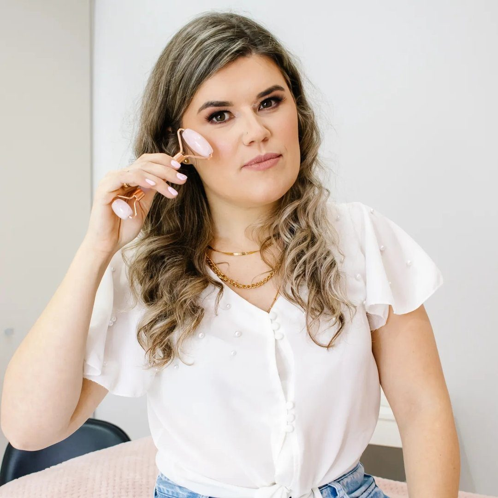

10 horas · teoria e prática
Limpeza de Pele
Protocolo profissional, seguro e personalizado, com teoria pela manhã e prática em 2 modelos reais à tarde.
R$ 1.500até 10x + taxa do cartão
Andreza Franz Estética · Cursos
Cursos presenciais em Caçador (SC) com Andreza Franz, esteticista formada em Cosmetologia e Estética. Teoria completa, prática em modelos reais e kit para começar a atender.

Catálogo
Escolha um curso para ver o cronograma completo, o que está incluso e o investimento.
10 horas · teoria e prática
Protocolo profissional, seguro e personalizado, com teoria pela manhã e prática em 2 modelos reais à tarde.

8 horas · curso intensivo
Aprenda do zero a técnica de extensão de cílios, com acompanhamento individual, prática em modelo real e kit completo.

8 horas · curso intensivo
Do mapeamento facial à henna: um design de sobrancelhas seguro, personalizado e profissional, com prática em 4 modelos.
Novos cursos são anunciados primeiro no Instagram.
Em todos os cursos
Fundamentos, biossegurança, técnica e orientações de atendimento profissional.
Você atende modelos reais com a Andreza ao lado, acompanhando cada etapa.
Cada curso inclui um kit para você começar a atender depois da formação.
Certificado ao final do curso e coffee break durante o dia.

Quem ensina
Esteticista formada em Cosmetologia e Estética
Realçando a beleza que já existe em você.
Na Andreza Franz Estética, em Caçador (SC), cada atendimento é único, feito com técnica, cuidado e muito carinho. São procedimentos personalizados para valorizar a beleza natural de cada cliente, com segurança, dedicação e atendimento humanizado do início ao fim.
É esse mesmo cuidado que ela leva para os cursos: aulas no espaço onde atende, com orientação de perto da teoria até a última modelo atendida.
Ver trabalhos no InstagramDúvidas frequentes

Contato
Fale com a Andreza pelo WhatsApp para tirar dúvidas, consultar datas e pedir a simulação do parcelamento.